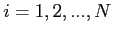
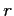

Next: The Choice of the
Up: Physical Models employed in
Previous: Schottky Contacts
Contents
At the term of the free flight of a particle, this one scatters with the phonons of the lattice (phonons are the quantization of the motion of ions of the lattice). So, at the end of the free flight, a scattering process have to be choosed. Let us see, how this happens in GNU Archimedes.
First of all, let us report the list of all scatterings taken into account in GNU Archimedes. We note that, while the self-scattering is computed simply, the probability of scattering for acoustic and optical phonons are computed by means of the quantum mechanics and we will show all the details about them.
- Self-Scattering. We introduce this scattering in order to determine the flight time. It is important to accurately compute this scattering, because it influences all process during the simulation. For more informations about this topic, read the book of K.Tomizawa, "Numerical Simulation of Submicron Semiconductor Devices", Artech House, Boston, London.
Let us report, briefly, how the self-scattering is introduced in the simulation. If the various scatterings read
for

, where  is the number of the scatterings taken into account in the simulation, then we define the following variable
is the number of the scatterings taken into account in the simulation, then we define the following variable  as follows
as follows
Then the free flight
of a particle will read
where 
is a random number between 0
and  .
The factor
will be used, as we will see at the end of this paragraph, to determine when the self-scattering occurs.
.
The factor
will be used, as we will see at the end of this paragraph, to determine when the self-scattering occurs.
- Elastic Acoustic Phonon Scattering.
From quantum mechanics, applying the Fermi's golden rule and some other approximations, it is possible to show that the probability that an electron with a starting pseudo-wave vector
 scatters with an elastic acoustic phonon and having a final pseudo-wave vector
, is
scatters with an elastic acoustic phonon and having a final pseudo-wave vector
, is
where
is a proportionality constant called deformation potential,
the elastic constant of the material,
the polar angle between the two vectors
and
 ,
the modulus of the phonon wave vector and
the volume of the crystal.
Now integrating on
one can easily obtain the probability that an electron of energy
,
the modulus of the phonon wave vector and
the volume of the crystal.
Now integrating on
one can easily obtain the probability that an electron of energy  scatters with an acoustic phonon. This last reads
scatters with an acoustic phonon. This last reads
where
is the density of states and reads
- Non-Polar Optical Phonon Scattering.
Concerning the non-polar optical phonon, following the same rules as before we get the two probabilities
| |
|
 |
(5.22) |
| |
|
|
(5.23) |
where
is the optical deformation potential constant,
the phonon angular frequency,  a value almost equal to the intrinsic density of the material. Pay attention that in GNU Archimedes we take into all the six optical phonons for the Silicon material. For more informations about this topic read the following paper
C.Jacoboni, L.Reggiani, "The Monte Carlo method for the solution of charge transport insemiconductors with applications to covalent materials", Reviews of Modern Physics, Vol.55, No.3, July 1983
a value almost equal to the intrinsic density of the material. Pay attention that in GNU Archimedes we take into all the six optical phonons for the Silicon material. For more informations about this topic read the following paper
C.Jacoboni, L.Reggiani, "The Monte Carlo method for the solution of charge transport insemiconductors with applications to covalent materials", Reviews of Modern Physics, Vol.55, No.3, July 1983
Subsections
Next: The Choice of the
Up: Physical Models employed in
Previous: Schottky Contacts
Contents
Didier Link
2007-05-18